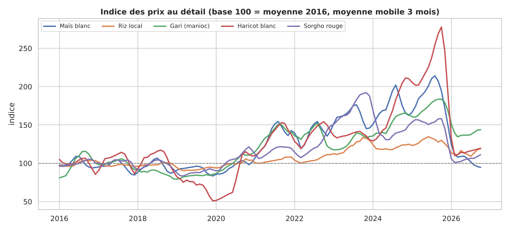
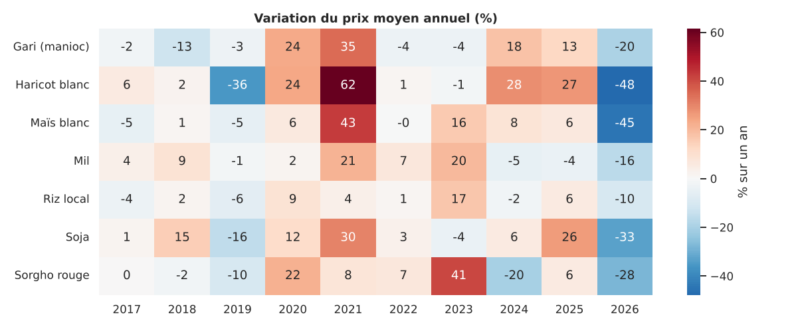
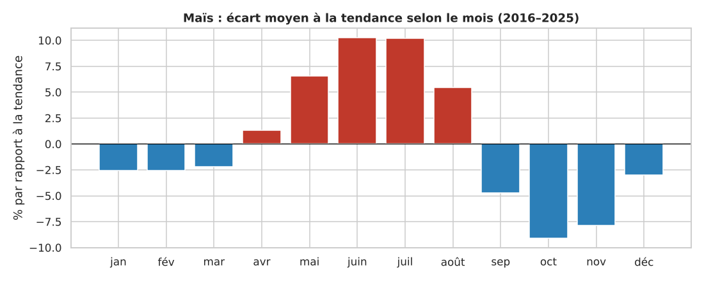
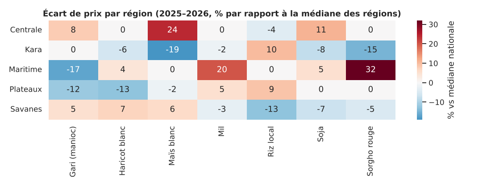
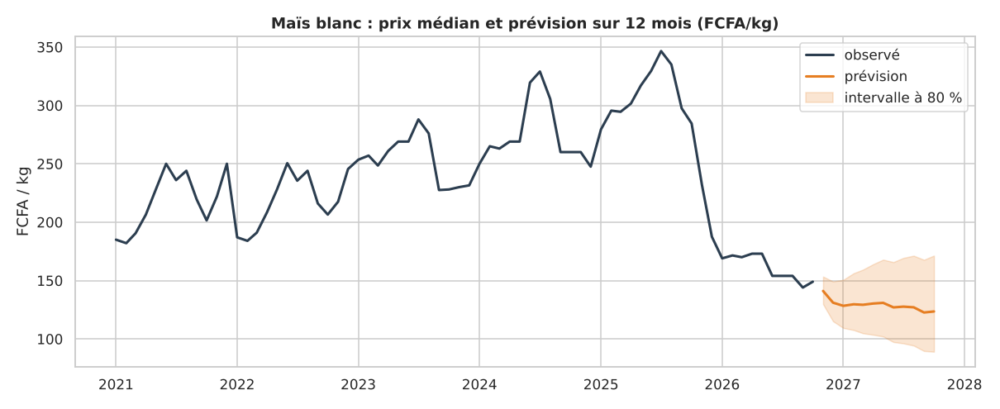
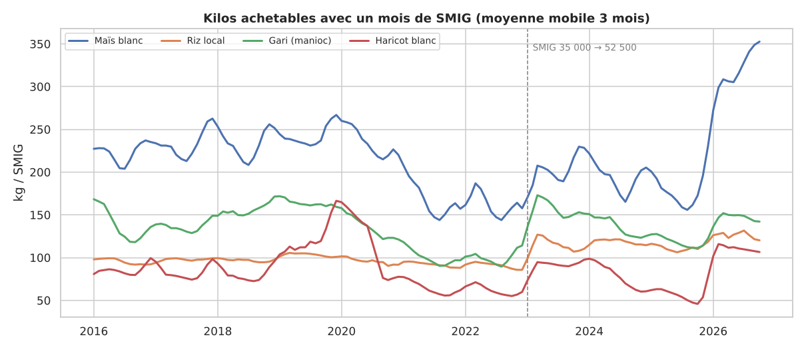
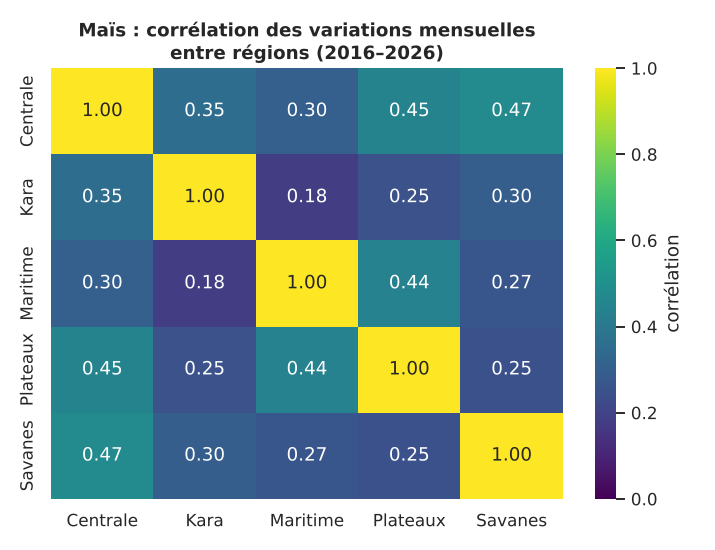
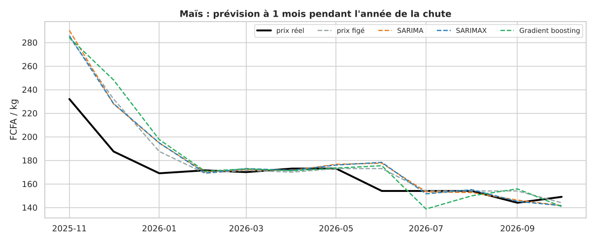
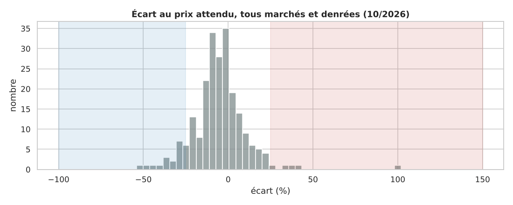

~/projets/prix-denrees-togo
Dix ans de prix sur les marchés du Togo.
Problème
Comment ont évolué les prix du maïs, du riz, du gari et des autres denrées de base au Togo, quand sont-ils les plus chers, et peut-on les anticiper ?
Ce que j'ai fait
51 179 relevés de prix, un panel constant de 36 marchés, analyse de tendance, de saisonnalité et des écarts régionaux, puis une prévision SARIMA validée sur deux années.
Résultat
−57 %pour le maïs entre son pic de juillet 2025 (346 FCFA/kg) et octobre 2026 (149 FCFA/kg), après dix ans de hausse.
donnéesDes relevés officiels, et un piège à éviter
Les prix au détail viennent du Programme alimentaire mondial (PAM), publiés sur la plateforme HDX, en FCFA par kilo.
Piège repéré : le nombre de marchés suivis passe d'une quarantaine à 116 en 2026. Un prix médian « tous marchés » mélangerait de vraies variations avec l'arrivée de nouveaux marchés. J'ai donc travaillé sur un panel constant de 36 marchés, présents chaque année depuis 2016 dans les 5 régions.
tendanceDix ans de hausse, puis une chute
- Entre 2016 et 2025, le maïs et le haricot ont plus que doublé à leur plus haut, avec des poussées en 2021 et entre 2023 et 2025.
- Le maïs atteint 346 FCFA/kg en juillet 2025, puis tombe à 149 FCFA/kg en octobre 2026. La baisse se retrouve sur les mêmes marchés : elle est réelle.


Contexte : d'après FEWS NET, les marchés étaient bien approvisionnés en 2026, avec une production céréalière attendue au-dessus de la moyenne des cinq dernières années, une demande faible et des restrictions commerciales dans le nord. En septembre 2026, le prix moyen du maïs était inférieur de 54 % à celui de l'année précédente, ce qui recoupe mes résultats.
saisonnalitéLe cycle soudure / récolte
Le maïs est le plus cher avant la récolte, pendant la soudure, et le moins cher juste après : environ +10 % en juin et −9 % en octobre par rapport à la tendance de l'année.

régionsDes écarts selon le produit
Sur 2025–2026, les écarts entre régions dépendent de la denrée : le maïs est par exemple 24 % plus cher en Centrale et 19 % moins cher à Kara que la médiane des régions. Ces écarts restent plus faibles que l'effet de la saison.

prévisionCe qu'un modèle peut (et ne peut pas) prévoir
| Période de test (12 mois) | Erreur SARIMA | Erreur « prix figé » |
|---|---|---|
| nov. 2024 → oct. 2025 (année normale) | 4,3 % | 13,1 % |
| nov. 2025 → oct. 2026 (année de la chute) | 91,7 % | 70,6 % |
Sur une année normale, le modèle saisonnier divise l'erreur par trois par rapport à la référence naïve. En revanche, aucun des deux n'anticipe la chute de 2025–2026, sans précédent dans l'historique : un modèle qui ne connaît que les prix passés ne voit pas venir un choc d'offre.

analyses avancéesPouvoir d'achat, marchés et prévisions
Pouvoir d'achat. Un mois de SMIG achetait 224 kg de maïs en 2016, seulement 140 kg en juin 2022. La hausse du SMIG (35 000 → 52 500 FCFA en janvier 2023) le remonte à 207 kg, et la chute des prix le porte à 352 kg en octobre 2026.

Intégration des marchés. Les variations mensuelles du maïs sont peu corrélées entre régions (0,27 à 0,39 en moyenne) : les marchés restent assez cloisonnés, et aucune région ne « transmet » clairement ses prix aux autres.

Prévision à 1 mois. J'ai comparé quatre méthodes. Sur une année normale, SARIMA fait le mieux (3,7 % d'erreur, contre 4,9 % pour le prix figé). Ajouter le prix mondial du maïs (SARIMAX, 3,9 %) n'aide pas, et le gradient boosting fait moins bien (5,1 %). Pendant la chute de 2026, aucune ne fait mieux que le prix figé.

Alertes de marché. En octobre 2026, 23 couples marché × denrée sur 224 s'écartaient de plus de 25 % de leur prix de saison attendu, surtout des baisses.

Ces analyses sont mises à jour chaque mois dans l'Observatoire des prix alimentaires au Togo, un tableau de bord interactif.
conclusionCe que j'en retiens
- Vérifier la composition des données avant de calculer une moyenne : sans le panel constant, une partie de la baisse de 2026 aurait été mal interprétée.
- La saisonnalité est le signal le plus fiable : elle est stable sur dix ans.
- Une prévision doit être testée sur plusieurs périodes : un bon score sur une année calme ne garantit rien face à un choc.
Limites : prix médians de marchés suivis par le PAM, sans les volumes vendus. Les causes des variations ne sont pas dans les données et viennent de sources externes (FEWS NET).